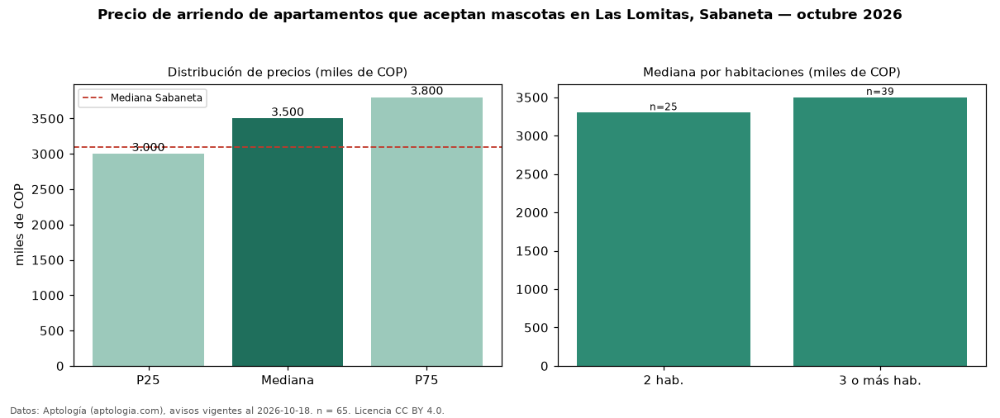

Precio de arriendo de apartamentos que aceptan mascotas en Las Lomitas, Sabaneta — octubre 2026
En Las Lomitas, Sabaneta, la mediana de canon mensual de apartamentos que aceptan mascotas es COP 3,50 millones, según 65 avisos vigentes. Prácticamente coincide con la mediana de todos los apartamentos en arriendo de Las Lomitas (COP 3,40 millones, n = 345); este segmento reúne el 19 % de esos avisos. Por metro cuadrado, la mediana es COP 41.667/m² al mes (n = 65), 5 % por encima del conjunto de referencia (COP 39.759/m²). El área mediana anunciada es 80 m². El segmento con más oferta es el de 3 o más habitaciones (39 avisos, mediana COP 3,50 millones); pasar de 2 habitaciones a 3 o más habitaciones cambia la mediana +6 %. El estrato más frecuente es 4 (95 % de los avisos con estrato). La mediana de todos los apartamentos en arriendo de Sabaneta es COP 3,10 millones (+13 % de diferencia). La mitad central de los avisos va de COP 3,00 millones a COP 3,80 millones (razón 1,3), una dispersión baja. Datos: Aptología (aptologia.com), CC BY 4.0 — https://www.aptologia.com/arriendo/sabaneta. Archivos: PDF, CSV con las cifras y gráfica PNG.

| Avisos únicos | 65 |
|---|---|
| Percentil 25 | COP 3.000.000 |
| Mediana | COP 3.500.000 |
| Percentil 75 | COP 3.800.000 |
| Mediana por m² | COP 41.666 |
Fuente: avisos vigentes de portales inmobiliarios recopilados por Aptología, deduplicados (mínimo 30 avisos únicos por celda). Precios pedidos, no cerrados. Fecha: 2026-10-18.